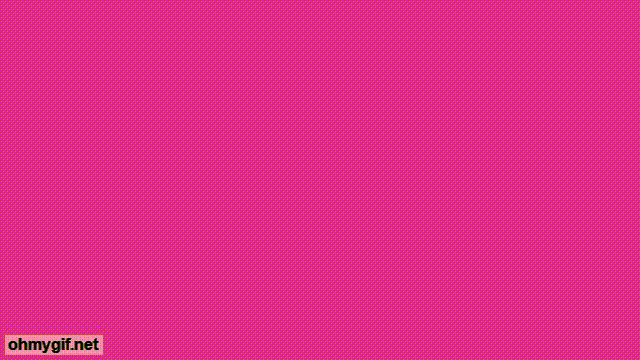

Intro Bonito
O álbum "Intro Bonito" é o álbum de estreia da banda. Ele foi lançado em 2014 e consiste em 15 faixas que exploram uma variedade de temas e estilos musicais.
O som do álbum é uma mistura de pop eletrônico e música japonesa, com letras que abordam tópicos como a cultura da internet, a identidade pessoal e a juventude contemporânea. O álbum começa com as faixas de intro, que apresentam a banda e estabelece o tom animado e otimista do álbum.
Outras faixas notáveis incluem "Sick Beat", que apresenta um riff de guitarra cativante, um refrão forte com um sample retirado de Mario 64, e a faixa "Homework", que é uma música energética sobre procrastinação e lidar com a pressão escolar.
O álbum é bastante único em sua mistura de elementos de música pop e japonesa, e foi bem recebido pela crítica e pelos fãs. Muitos elogiaram Kero Kero Bonito por sua abordagem refrescante à música pop e sua capacidade de incorporar elementos de diferentes gêneros musicais de uma maneira coesa e cativante. Foi com certeza um bom início para a banda.